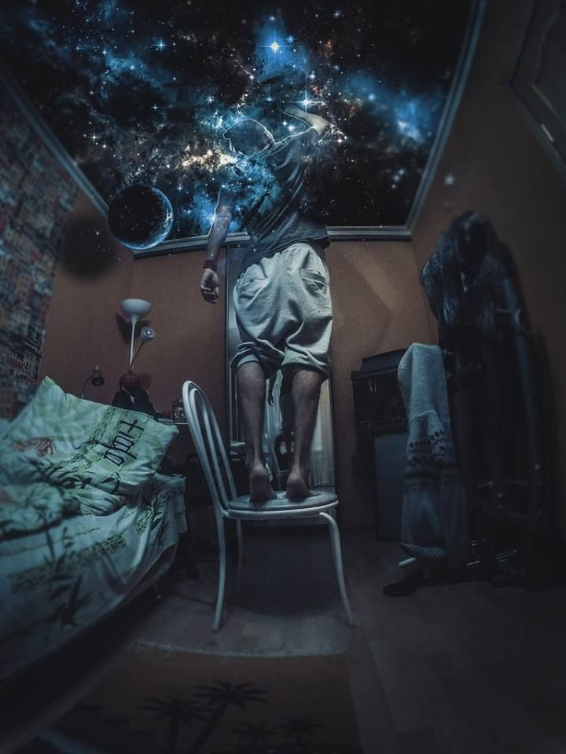

|

|
Could the crap from your past have helped shape
the awesome person you are today?
Could it have even been critical and required?
And could all the crap in your present be an opportunity
for growth, even if it doesn't feel like it right now?
Life is one big crazy journey.
Let's appreciate and be proud of our battle scars --
whether old or new.
They make us who we are, and who we will become.
|